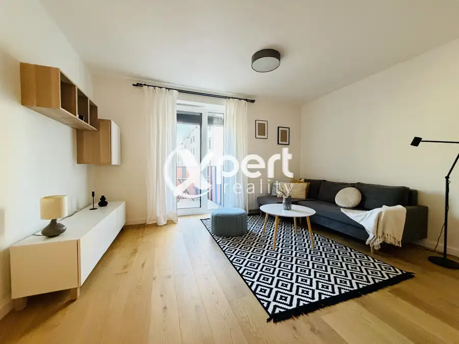
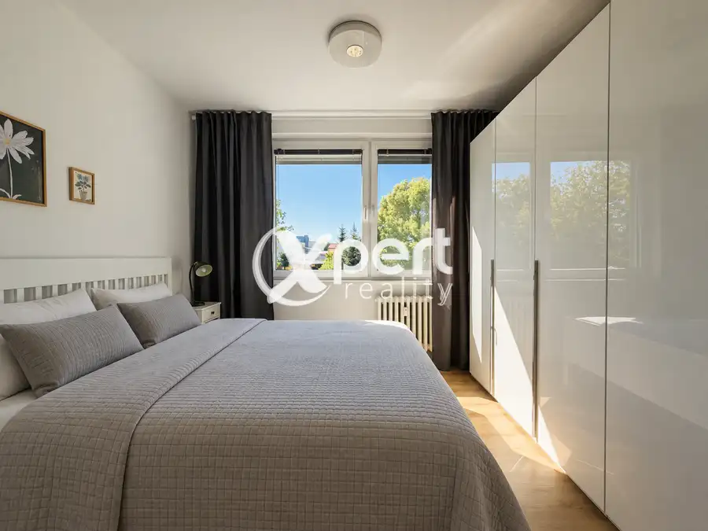
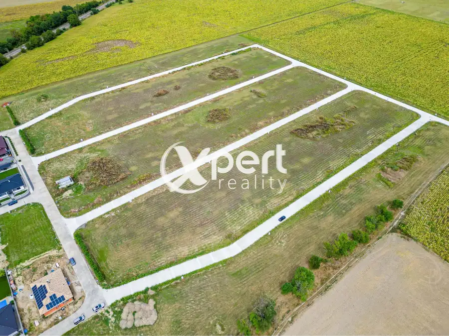
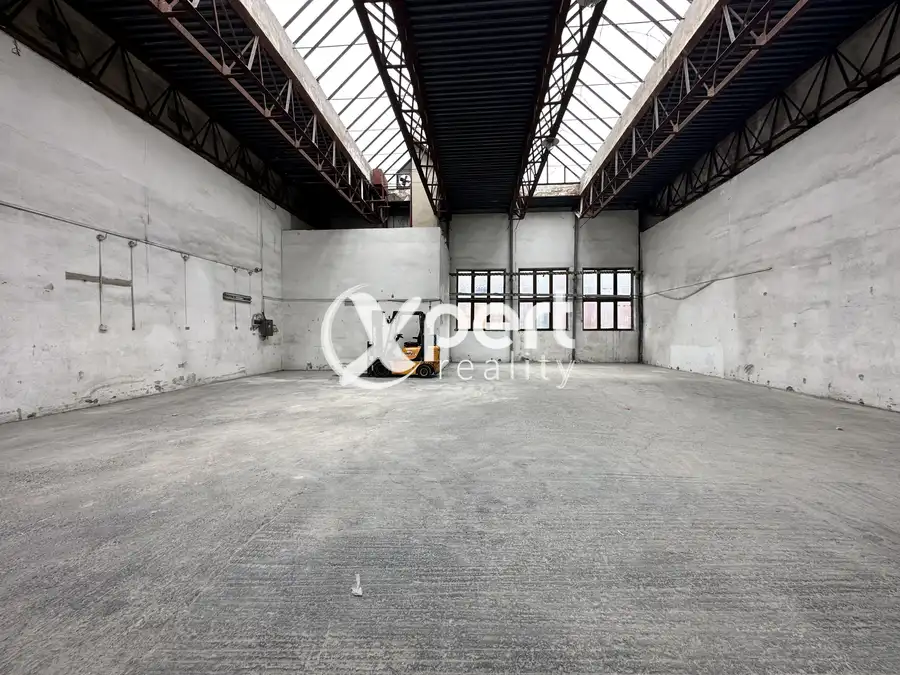
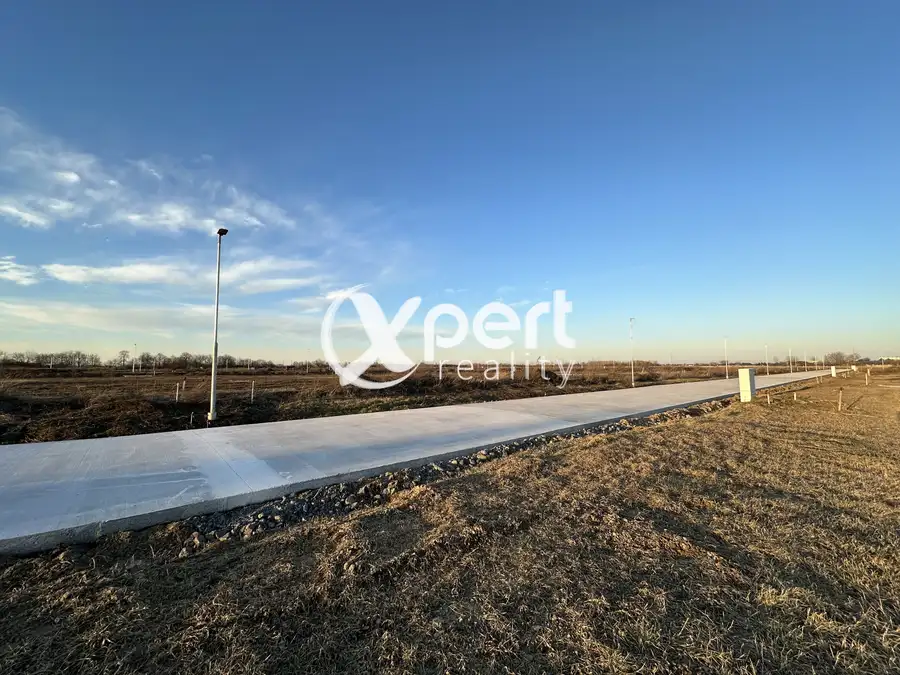
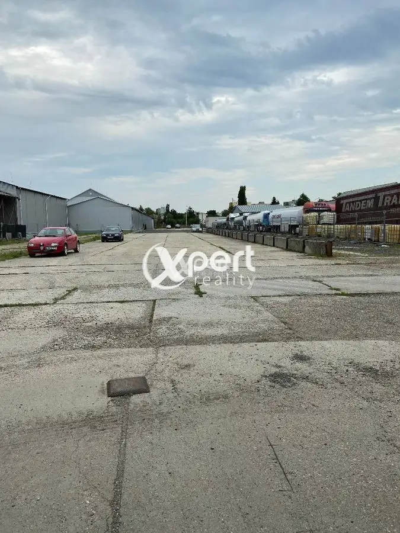
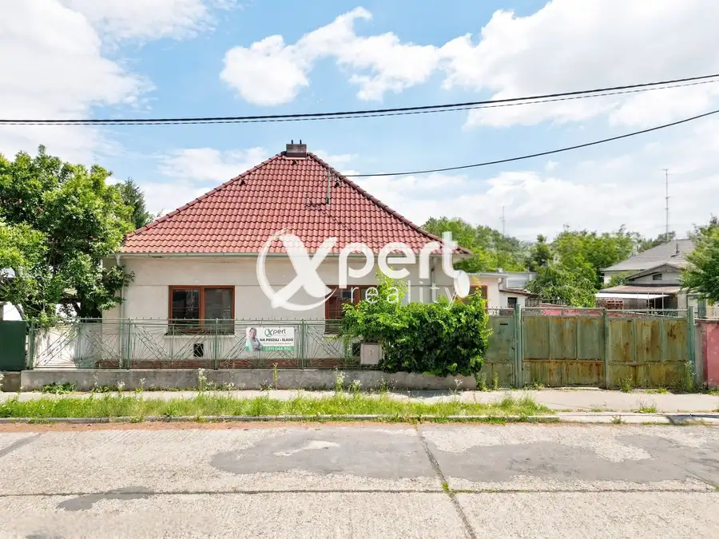

Aktuálna ponuka
Nehnuteľnosti, ktoré ponúkam
12 nehnuteľností na predaj a prenájom. Vyberte typ, alebo napíšte lokalitu.
12 z 12 ponúk
 DomNové10
228 000 €Rodinný dom s mnohými benefitmi na predaj
Čierny Brod
174.4 m²
Rodinný dom na predaj v obci Čierny Brod – pokojné bývanie s výbornou dostupnosťouHľadáte bývanie, ktoré spája pokoj vidieka s rýchlou dostupnosťou…
DomNové10
228 000 €Rodinný dom s mnohými benefitmi na predaj
Čierny Brod
174.4 m²
Rodinný dom na predaj v obci Čierny Brod – pokojné bývanie s výbornou dostupnosťouHľadáte bývanie, ktoré spája pokoj vidieka s rýchlou dostupnosťou…
 Dom10
120 000 €Nová cena.Na predaj rodinný dom v obci Topoľnica
Topoľnica
117.1 m²
Dom je vo výbornej kondícii, stojí na pevných základoch. Je ihneď voľný a pripravený na bývanie.Dom bol donedávna využívaný a obývaný to z neho robí…
Dom10
120 000 €Nová cena.Na predaj rodinný dom v obci Topoľnica
Topoľnica
117.1 m²
Dom je vo výbornej kondícii, stojí na pevných základoch. Je ihneď voľný a pripravený na bývanie.Dom bol donedávna využívaný a obývaný to z neho robí…
 Dom10
189 000 €Dom,ktorý ponúka komfort novostavby bez starostí s výstavbou
Tomášikovo
100 m²
Dom, ktorý ponúka komfort novostavby bez starostí s výstavbou.Predstavujeme vám výnimočný 4-izbový rodinný dom v obci Tomášikovo. Vďaka kvalitnému…
Dom10
189 000 €Dom,ktorý ponúka komfort novostavby bez starostí s výstavbou
Tomášikovo
100 m²
Dom, ktorý ponúka komfort novostavby bez starostí s výstavbou.Predstavujeme vám výnimočný 4-izbový rodinný dom v obci Tomášikovo. Vďaka kvalitnému…
 Byt10
179 800 €Na predaj Krásny 3-izbový byt v centre Galanty s garážou
Galanta
3-izbový70 m²
Slnečný 3-izbový byt v centre Galanty s garážovým státím – pripravený na okamžité bývanieHľadáte bývanie, do ktorého sa môžete ihneď nasťahovať bez…
Byt10
179 800 €Na predaj Krásny 3-izbový byt v centre Galanty s garážou
Galanta
3-izbový70 m²
Slnečný 3-izbový byt v centre Galanty s garážovým státím – pripravený na okamžité bývanieHľadáte bývanie, do ktorého sa môžete ihneď nasťahovať bez…

BytNové10 Cena dohodouPrenájom 2 izbového bytu s parkovacím miestom! Galanta 2-izbový60 m² Prenájom 2 izbového bytu s parkovacím miestom!Byt je vyšperkovaný do posledného detailu, veľmi vkusný a priestranný.Má skvelé dispozičné riešenie,…
BytNové10 Cena dohodou3 Izbový byt pre náročných na prenájom Galanta 3-izbový72 m²1. podlažie 3-izbový byt na prenájomByt je vyšperkovaný do posledného detailu, veľmi vkusne zariadený a priestranný.Má skvelé dispozičné riešenie, množstvo…
Pozemok7 Cena dohodouNa predaj stavebné pozemky, Galanta, nová lokalita Galanta Na predaj stavebné pozemky v meste Galanta, časť Hody.Pozemky sa nachádzajú vo vyhľadávanej a lukratívnej lokalite, vďaka dobrej polohe je v tichej…
Komerčné priestory5 Cena dohodouNa prenájom spevnené plochy, garáže, parkoviská Galanta 1 m² Na prenájom spevnené plochy, garáže a parkoviskáParkovacia plocha je strážená SBS službou 24h denne. Prístup je neobmedzený.Výhodou parkovania je…
Pozemok5 Cena dohodouStavebné pozemky na predaj, Galanta, nová lokalita Galanta Na predaj stavebné pozemky v meste Galanta, časť Hody.Pozemky sa nachádzajú vo vyhľadávanej a lukratívnej lokalite, vďaka dobrej polohe je v tichej…
Komerčné priestory3 Cena dohodouSpevnené plochy, garáže, parkoviská na prenájom v meste Galanta Galanta 1 m² Na prenájom spevnené plochy, garáže a parkoviskáParkovacia plocha je strážená SBS službou 24h denne. Prístup je neobmedzený.Výhodou parkovania je… DomRezervované4 275 000 €Top lokalita a moderné bývanie Galanta 112.85 m² Ponúkame na predaj nádherný štvorizbový rodinný dom, novostavbu.- Pozemok 573m2Dom je momentálne vo výstavbe, dokončenie je plánovane na koniec roka…
DomRezervované10 185 000 €Rodinný dom v centre mesta Galanta Galanta 100 m² Ponúkame na predaj starší rodinný dom len na skok od centra mesta Galanta, ideálny na rekonštrukciu podľa vašich predstáv.Ak ste niekedy túžili po…Tomuto výberu zatiaľ nezodpovedá žiadna ponuka. Napíšte mi, čo hľadáte.